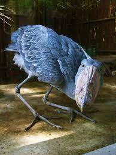

My bird’s name is Tyrone. He is 5 foot 4 and he loves to terrorize just about anything. Tyrone goes flying around making machine gun noises using his beak to scare humans in to hiding.
The humans who don’t go into hiding or can’t find a place to hide are forced to endure the wrath of Tyrone razor sharp dinosaur looking feet.

Tyrone also daily attacks crocodiles using his beak to cut them in half.
The only way to escape the wrath of Tyrone is to bow to him.